146 — Twelve-Factor App y configuración cloud-native
Parte: 12 — Arquitectura cloud-native y sistemas distribuidos
Nivel: avanzado-experto · Horas estimadas: 4
Laboratorio: architecture · Estado: EXECUTABLE_CORE
🎯 Propósito
Fijar cómo debe comportarse cada pieza para que una plataforma que no sabe qué es pueda operarla: arrancar, configurarse, escalar, ser reemplazada y morir sin ceremonia. La clase toma la lista clásica de doce propiedades, la juzga por ese criterio, señala cuáles han envejecido mal o son directamente incorrectas hoy, y añade las siete que faltan porque se escribió antes de casi todo lo que este programa ha construido. Y termina con el mito más caro de esta materia: que un servicio pueda ser realmente sin estado.
📚 Resultados de aprendizaje
Al finalizar podrás:
- Juzgar cada propiedad por si permite que la plataforma opere la aplicación.
- Corregir las tres que hoy se aplican mal, empezando por la configuración.
- Añadir las propiedades que la lista original no contempla.
- Separar qué configuración va en la imagen, en el despliegue y en ejecución.
- Encontrar el estado local escondido, que siempre existe.
🧩 Conceptos centrales
| Concepto | Comprensión verificable |
|---|---|
operable por la plataforma |
Criterio único de esta clase: que algo que no conoce la aplicación pueda arrancarla, escalarla, reemplazarla y matarla sin dañarla. |
configuración externalizada |
Lo que cambia entre entornos vive fuera del artefacto. Externalizar es correcto; el mecanismo depende de si hay que rotarlo. |
desechabilidad |
Arrancar rápido y terminar limpiamente ante una señal. Es lo que permite escalar, desplegar y sobrevivir a la retirada de capacidad. |
validación al arrancar |
Comprobar la configuración completa al iniciar y fallar de inmediato con un mensaje claro, en vez de fallar tres horas después. |
estado local escondido |
Lo que la aplicación guarda en su proceso sin darse cuenta: cachés, ficheros temporales, temporizadores, contadores. |
recurso adjunto |
Toda dependencia externa se trata igual y se declara desde fuera, incluida su credencial, que además debe ser temporal. |
🧠 Modelo mental
Una arquitectura es un conjunto de decisiones costosas de cambiar; su calidad se juzga contra escenarios concretos, no por la cantidad de servicios usados.
Aplicado a esta clase, separa siempre cuatro planos: intención (qué necesita el usuario), configuración (qué declaramos), estado observado (qué existe de verdad) y evidencia (cómo sabemos que cumple). Confundirlos produce diseños que se ven correctos en un diagrama pero fallan al operar.
🗺️ Flujo de razonamiento

📖 Desarrollo
1. El criterio, y lo que sigue siendo cierto
La lista clásica de doce propiedades se escribió para una plataforma concreta y se cita como dogma. Conviene juzgarla por lo que de verdad persigue:
que algo que NO sabe qué es esta aplicación pueda
arrancarla, configurarla, escalarla, reemplazarla y matarla
sin conocer sus detalles
Y con ese criterio, lo que sigue siendo cierto y central:
UN CÓDIGO, MUCHOS DESPLIEGUES
el mismo artefacto en todos los entornos clase 099
DEPENDENCIAS EXPLÍCITAS
declaradas y fijadas con huella; nada implícito del sistema
clase 138
CONSTRUIR, PUBLICAR Y EJECUTAR SEPARADOS
y publicar no vuelve a construir clase 099
PROCESOS SIN ESTADO LOCAL
cualquier copia puede atender cualquier petición
RECURSOS ADJUNTOS
toda dependencia externa se declara desde fuera y se puede
sustituir sin tocar el código
ESCALAR AÑADIENDO COPIAS
no haciendo la copia más grande
DESECHABILIDAD
arranque rápido y terminación limpia ante una señal clase 069
PARIDAD ENTRE ENTORNOS
mismos servicios de apoyo, mismas versiones clase 104
REGISTRO COMO FLUJO
la aplicación no gestiona ficheros ni rotación clase 122
Y de todas, la que más consecuencias tiene y menos se cumple es la desechabilidad, porque de ella dependen tres cosas a la vez:
escalar deprisa cuando llega carga clase 129
desplegar sin cortes clase 102
sobrevivir a la retirada de capacidad interrumpible clase 143
Y sus dos mitades se miden por separado:
ARRANQUE desde que el proceso empieza hasta que sirve
por debajo de 10 s cómodo
30 s a 2 min el autoescalado llega tarde
más de 2 min no se puede escalar por demanda
TERMINACIÓN LIMPIA al recibir la señal
dejar de aceptar trabajo nuevo
terminar lo que está en curso, con un plazo
confirmar lo que corresponda clase 113
cerrar conexiones y salir
Y el fallo típico de la segunda mitad: ignorar la señal y esperar a que la maten, lo que corta peticiones en curso y deja mensajes sin confirmar.
2. Las tres que hoy se aplican mal
1. «La configuración va en variables de entorno».
La idea correcta es externalizar; el mecanismo ha envejecido mal:
correcto lo que cambia entre entornos no está dentro del artefacto
incorrecto que CUALQUIER valor viaje en variables de entorno
porque una variable de entorno:
no se puede cambiar sin reiniciar clase 137
la heredan los procesos hijos
aparece en volcados y en informes de error
Y de ahí la corrección de esta clase:
variables de entorno valores no sensibles que no cambian en caliente
fichero montado lo que hay que rotar, releído al cambiar
servicio de secretos credenciales, con identidad de carga clase 137
interruptor lo que cambia el comportamiento clase 105
Y una regla que evita sorpresas: si un valor cambia el comportamiento del sistema de forma apreciable, no es configuración: es un interruptor, y necesita registro de quién lo cambió, activación gradual y reversión.
2. «Los registros van a la salida estándar».
Cierto, y hoy insuficiente:
correcto la aplicación no gestiona ficheros ni rotación
incompleto emitir líneas de texto
lo que hace falta hoy
eventos estructurados con mensaje constante clase 122
una línea ancha por unidad de trabajo
y además métricas y trazas, que no son registro clases 123, 124
3. «Los procesos administrativos se ejecutan como tareas puntuales».
Esta es la que peor ha envejecido:
entonces entrar en una máquina y ejecutar un guion
hoy un trabajo con la MISMA imagen y la misma configuración,
lanzado por la plataforma, con su registro y su resultado
clase 079
Y sobre todo, la corrección importante:
las migraciones de esquema NO son tareas puntuales
son una secuencia de despliegues compatibles clase 102
→ expandir, migrar, contraer
→ y el paso de contraer se planifica con fecha
Y una cuarta, más leve: «la concurrencia se consigue con el modelo de procesos». Hoy la unidad de escalado la decide la plataforma, y lo que queda de esa propiedad es lo que de verdad importaba: escalar horizontalmente y no guardar estado local.
3. Lo que falta en la lista
La lista original es anterior a casi todo lo que este programa ha construido. Lo que hay que añadirle:
1. SEÑALES DE ESTADO SEPARADAS clase 079
viva ¿hay que reiniciarme?
lista ¿puedo recibir tráfico?
arranque ¿he terminado de iniciarme?
→ confundirlas provoca reinicios en cadena bajo carga
2. OBSERVABILIDAD COMO SALIDA DE PRIMERA CLASE parte 10
métricas con etiquetas acotadas, trazas con contexto propagado
y el identificador de correlación en todo
3. IDENTIDAD OBTENIDA DEL ENTORNO clase 137
la aplicación no guarda credenciales: las pide y las renueva
4. LÍMITES DECLARADOS Y RESPETADOS clase 078
la aplicación declara cuánta memoria y procesador necesita
y se comporta bien cuando se le acota
→ un tiempo de ejecución que no ve su límite se pasa y muere
5. IDEMPOTENCIA DE CUANTO LE LLEGA DE FUERA clase 116
la plataforma reintenta sola: mensajes, invocaciones, tareas
6. PLAZOS Y DEGRADACIÓN clase 130
toda llamada saliente con plazo, y una respuesta razonable
cuando la dependencia falla
7. COMPATIBILIDAD ENTRE VERSIONES clases 102, 115
la versión nueva convive con la anterior: esquema, cola y contrato
Y la sexta y la séptima son las que convierten una aplicación correcta en una operable: sin plazos, una dependencia lenta la tumba; sin compatibilidad, no se puede desplegar de forma escalonada.
Y una propiedad transversal que merece nombre propio: fallar pronto y con un mensaje útil.
al arrancar, validar TODA la configuración
¿están todas las variables necesarias?
¿tienen valores del tipo y rango esperados?
¿se puede resolver y alcanzar cada dependencia declarada?
si falta algo → salir de inmediato con un mensaje que diga QUÉ falta
Y el motivo, con un ejemplo que ocurre siempre:
sin validación la aplicación arranca, sirve durante tres horas
y falla al llegar la primera petición que usa
esa configuración
→ y el error es un fallo de referencia nula,
no «falta la variable X»
con validación no arranca, el despliegue no avanza y el mensaje
dice exactamente qué falta
Y su complemento: la configuración se valida también en la canalización, comparando la que se va a desplegar con el esquema declarado.
4. El estado que siempre está
«Sin estado» es una simplificación útil y falsa. El estado no desaparece: se mueve fuera del proceso. Y lo que queda dentro sin darse cuenta es la causa de una familia entera de errores raros.
La lista de estado local escondido, con lo que produce cada uno:
CACHÉ EN MEMORIA
cada copia tiene el suyo → 40 copias, 40 versiones del dato
→ invalidar exige avisar a las 40 clase 111
→ y si la clave no lleva el usuario, hay fuga entre usuarios
FICHEROS TEMPORALES
se comparten entre peticiones de la misma copia clase 117
→ nombres únicos y limpieza
SESIÓN PEGADA AL SERVIDOR
obliga a mantener esa copia viva
→ impide desplegar y escalar con libertad
TEMPORIZADORES Y TAREAS DE FONDO
se pierden al terminar el proceso
→ y con varias copias, se ejecutan N veces
→ esto es un trabajo programado, no una tarea dentro del servicio
CONTADORES Y ACUMULADORES
«llevamos 412 pedidos hoy» dentro del proceso
→ cada copia cuenta lo suyo y ninguna cuenta bien
CONEXIONES Y AGRUPADORES
son estado, y multiplican por el número de copias clase 109
ESTADO DE INICIALIZACIÓN PEREZOSA
la primera petición de cada copia es lenta
→ y con autoescalado, eso ocurre continuamente
Y las dos preguntas que lo detectan:
¿qué se pierde si mato este proceso ahora mismo?
¿qué pasa si hay veinte copias en vez de una?
La segunda encuentra los temporizadores y los contadores; la primera, las cachés y los ficheros.
Y sobre los servicios que sí tienen estado por naturaleza —bases de datos, colas, motores durables—, la conclusión honesta:
estas propiedades NO se les aplican igual
no son desechables: retirarlos tiene consecuencias
no escalan añadiendo copias sin más
y su terminación limpia es mucho más delicada
→ por eso se usan como servicios gestionados siempre que se pueda
y por eso la parte 09 existe
Y la lista de comprobación de la clase:
☐ el mismo artefacto va a todos los entornos
☐ las dependencias están declaradas y fijadas con huella
☐ arranque medido, por debajo del umbral que el escalado necesita
☐ la terminación atiende la señal: deja de aceptar, termina y confirma
☐ la configuración está externalizada, con el mecanismo adecuado a
si hay que rotarla
☐ lo que cambia el comportamiento es un interruptor, no una variable
☐ la configuración se valida al arrancar y el proceso falla si falta algo
☐ hay señales separadas de vivo, listo y arrancando
☐ se emiten métricas y trazas, no solo registros
☐ la aplicación obtiene su identidad del entorno
☐ declara sus límites y se comporta bien cuando se le acotan
☐ todo lo que llega de fuera es idempotente
☐ toda llamada saliente tiene plazo y hay respuesta degradada
☐ la versión nueva convive con la anterior
☐ se ha buscado el estado local escondido con las dos preguntas
Y el cierre que enlaza con la clase siguiente: con las piezas preparadas para vivir en la plataforma, queda la decisión que determina todo lo demás: dónde se ponen las fronteras. Y esa no la decide la tecnología, sino quién es dueño de qué datos, que es la materia de la clase 147.
🔬 Ejemplo trabajado
CloudShop audita sus quince servicios contra la lista corregida. La auditoría cabe en una tabla y produce tres hallazgos que ya habían causado incidentes sin que nadie los relacionara.
La tabla.
```text cumplen mismo artefacto en todos los entornos 15 de 15 dependencias fijadas con huella 15 de 15 (clase 138) arranque por debajo de 30 s 9 de 15 terminación limpia ante la señal 6 de 15 configuración externalizada 15 de 15 mecanismo adecuado para lo que rota 2 de 15 (clase 137) validación de configuración al arrancar 3 de 15 señales de vivo y listo separadas 7 de 15 métricas y trazas además de registros 15 de 15 (parte 10) identidad obtenida del entorno 15 de 15 (clase 137) límites declarados 15 de 15 se comporta bien al ser acotado 11 de 15 idempotencia de lo que llega de fuera 13 de 15 (clase 116) plazos en llamadas salientes 15 de 15 (clase 130) compatibilidad con la versión anterior 15 de 15 (clase 102) sin estado local escondido 4 de 15
Las cuatro filas peores son las que producen los hallazgos.
**Hallazgo 1: nueve servicios no terminaban limpiamente.**
```text
comportamiento observado al recibir la señal
6 servicios terminan correctamente
7 servicios la ignoran y esperan a que los maten (30 s después)
2 servicios cierran de inmediato, cortando peticiones en curso
Y el efecto, que llevaba meses atribuido a otra cosa:
peticiones cortadas por despliegue, medido ~180 por despliegue
despliegues al día 40
peticiones cortadas al día ~7.200
proporción del total 0,06 %
se achacaba a «errores intermitentes de red»
```text antes después termina limpiamente 6 de 15 15 de 15 peticiones cortadas por despliegue ~180 0 mensajes sin confirmar por terminación ~40 0
Y la secuencia que se implantó en los quince, idéntica:
```text
1. marcar «no listo» → el reparto deja de enviar tráfico
2. esperar a que el reparto se entere (unos segundos)
3. dejar de aceptar peticiones y de leer de las colas
4. terminar lo en curso, con plazo de 25 s
5. confirmar lo que corresponda
6. cerrar conexiones y salir
El paso 2 es el que casi nadie pone y sin él los pasos siguientes no sirven de nada: el reparto sigue enviando tráfico durante unos segundos después de que el proceso se marque como no listo.
Hallazgo 2: la configuración que falló tres horas después.
03:10 despliegue de una versión con una variable nueva mal escrita
03:10 el servicio arranca correctamente
03:10 las comprobaciones de salud pasan
06:40 llega la primera petición que usa esa ruta
06:40 fallo de referencia nula; 100 % de esa ruta cae
07:15 diagnosticado y corregido
Tres horas y media entre desplegar y fallar, y el error no decía nada útil.
```text antes después validación al arrancar 3 de 15 15 de 15 qué se valida — presencia, tipo, rango y alcance de cada dependencia validación también en la canalización no sí incidentes por configuración en 6 meses 4 0 despliegues bloqueados por configuración inválida — 11
Once despliegues bloqueados en seis meses **antes de llegar a producción**.
**Hallazgo 3: el estado local escondido.**
Las dos preguntas del apartado cuarto se aplicaron a los quince servicios:
```text
¿qué se pierde si lo mato ahora?
cachés en memoria sin invalidación coordinada 9 servicios
ficheros temporales sin limpiar 4
trabajo en curso no confirmado 7 (hallazgo 1)
¿qué pasa con veinte copias en vez de una?
temporizadores dentro del servicio 3
→ un envío de recordatorios se ejecutaba una vez por copia
→ con 12 copias, 12 correos por cliente
contadores acumulados en memoria 2
→ un panel de «pedidos de hoy» mostraba 1/12 del valor real
inicialización perezosa cara 5
→ la primera petición de cada copia tardaba 3,2 s
→ con autoescalado, ocurría constantemente
Y el de los recordatorios llevaba cinco meses enviando correos duplicados:
correos duplicados enviados, estimados ~31.000
reclamaciones recibidas 14
cómo se explicaba antes «un problema del proveedor»
corrección el envío pasó a ser un trabajo programado, con bloqueo
y con idempotencia clases 079, 116
Y las inicializaciones perezosas se movieron al arranque, con una consecuencia buscada:
```text perezosa en el arranque tiempo de arranque 4 s 9 s primera petición de una copia nueva 3,2 s 41 ms coste arranque más lento; escalado igual de rápido porque el umbral eran 30 s
**El arranque, medido y corregido.**
```text
servicios por encima de 30 s 6
causas
consultar configuración remota al arrancar 4
cargar un modelo o un catálogo entero en memoria 3
esperar a que una dependencia estuviera lista 2
ejecutar migraciones al arrancar 1 ← grave
El último merecía su propio incidente:
el servicio ejecutaba las migraciones de esquema al arrancar
con 12 copias arrancando a la vez tras un despliegue
→ 12 procesos intentaban migrar
→ bloqueos y arranques de 4 minutos
corrección migración como trabajo previo al despliegue,
con expandir y contraer clase 102
```text antes después arranque, mediana 38 s 11 s arranque, peor caso 4 min 19 s servicios que escalan a tiempo 9 de 15 15 de 15
**La configuración, reorganizada en tres capas.**
```text
EN LA IMAGEN lo que no cambia entre entornos
rutas internas, valores por defecto, esquema
EN EL DESPLIEGUE lo que cambia por entorno
puntos de acceso, tamaños, regiones
EN EJECUCIÓN lo que rota o cambia el comportamiento
credenciales (fichero releído) e interruptores
valores que estaban en variables de entorno y cambiaron de sitio
credenciales 18 → almacén
valores que cambiaban el comportamiento 7 → interruptores
el resto 61 → siguen igual
Y los siete que pasaron a interruptores tenían todos la misma característica: alguien los cambiaba de vez en cuando y nadie sabía quién ni cuándo.
A los cuatro meses.
```text antes después terminación limpia 6 de 15 15 de 15 peticiones cortadas por despliegue ~180 0 validación al arrancar 3 de 15 15 de 15 incidentes por configuración 4 / 6 meses 0 arranque, peor caso 4 min 19 s estado local escondido, servicios afectados 11 de 15 0 de 15 correos duplicados ~31.000 0 inicialización perezosa en el camino crítico 5 de 15 0 de 15 valores sensibles en variables de entorno 18 0 valores que cambian comportamiento como variable 7 0
**La lección que esta clase traslada a la parte 12**: la auditoría no encontró ningún problema nuevo. Encontró **la explicación de tres cosas que ya estaban ocurriendo y que se atribuían a otra causa**: siete mil doscientas peticiones cortadas al día que se llamaban «errores de red», treinta y un mil correos duplicados que se llamaban «un problema del proveedor», y un panel con la doceava parte de los pedidos que nadie había cuestionado. Las tres eran estado local escondido o terminación sucia, y las tres estaban en la lista desde 2011.
## 🧪 Laboratorio guiado
Ejecuta desde la raíz:
```bash
python classes/part-12-cloud-native-distributed-architecture/146-twelve-factor-app-y-configuracion-cloud-native/lab.py
El laboratorio selecciona el motor de práctica architecture y produce
lab_result.json. El escenario, sus comprobaciones y el artefacto esperado corresponden a
esta clase; no requiere credenciales y deja explícito qué debe revalidarse en un sandbox real.
- Lee
exercise.stepsy formula una predicción antes de ejecutar. - Ejecuta la práctica y verifica todos los elementos de
checks. - Provoca el caso de
negative_testy explica la señal observada. - Materializa
revision-twelve-factorenevidence/usando la plantilla indicada. - Para proveedor real, sigue
sandbox.requires, registra costo y ejecutadestroy.
Evidencia esperada
El artefacto principal es un diagrama acompañado por decisiones y trade-offs. Además, la entrega debe incluir el comando ejecutado, la salida estructurada y una conclusión que no exceda lo observado.
🏆 Reto verificable
Construye revision-twelve-factor para el caso CloudShop. Incluye una alternativa descartada,
un supuesto que pueda falsarse, una prueba de fallo y una decisión de rollback.
✅ Criterio de aceptación
- [ ]
lab.pytermina con código 0 y genera JSON válido. - [ ] La entrega conecta al menos tres requisitos con mecanismos verificables.
- [ ] Existe una prueba positiva y una prueba negativa con evidencia.
- [ ] Seguridad, costo y operación aparecen como decisiones, no como anexos.
- [ ] Se declara una limitación y una condición que obligaría a revisar el diseño.
- [ ] Otra persona puede repetir el recorrido sin conocimiento tácito.
⚠️ Errores frecuentes
| Síntoma | Causa probable | Corrección |
|---|---|---|
| Cada despliegue corta peticiones que se achacan a errores de red | El proceso ignora la señal de terminación, o cierra sin esperar a que el reparto deje de enviarle tráfico | Márcate no listo, espera a que el reparto se entere, deja de aceptar, termina lo en curso con plazo y confirma antes de salir. |
| Un despliegue arranca bien y falla horas después por configuración | No se valida la configuración al arrancar | Valida presencia, tipo, rango y alcance de las dependencias al iniciar, falla de inmediato con un mensaje claro y valida también en la canalización. |
| Una tarea periódica se ejecuta tantas veces como copias hay | El temporizador vive dentro del servicio | Conviértelo en un trabajo programado con bloqueo e idempotencia, fuera del proceso que sirve peticiones. |
| Un contador o panel muestra una fracción del valor real | Se acumula en memoria y cada copia cuenta lo suyo | Saca el estado del proceso; cuenta con métricas agregadas o en un almacén compartido. |
| El autoescalado llega tarde y las copias nuevas responden lentas al principio | Arranque largo e inicialización perezosa en el camino crítico | Mueve la inicialización al arranque, quita consultas remotas y saca las migraciones del arranque. |
| Un valor de configuración cambia el comportamiento y nadie sabe quién lo tocó | Se trató como configuración lo que es un interruptor | Si cambia el comportamiento de forma apreciable, hazlo interruptor: con registro, gradualidad y reversión. |
🛡️ Seguridad, ética y costo
Trabaja con cuentas propias o sandboxes autorizados. No publiques secretos, identificadores reales ni datos personales. Antes de crear recursos pagos define presupuesto, etiquetas y comando de destrucción; después verifica que no queden recursos huérfanos. Los ejemplos locales enseñan contratos, pero no certifican cumplimiento ni disponibilidad de producción.
❓ Preguntas de comprobación
- ¿Cuál es el criterio único para juzgar estas propiedades?
- ¿Qué tiene de correcto y de incorrecto «la configuración va en variables de entorno»?
- ¿Qué siete propiedades faltan en la lista original y por qué?
- ¿Qué dos preguntas encuentran el estado local escondido?
- ¿Por qué las migraciones de esquema no son una tarea puntual?
🔗 Referencias
- Wiggins, A. (2011). The Twelve-Factor App — la lista original y su contexto. https://12factor.net/
- Hoffman, K. (2016). Beyond the Twelve-Factor App — propiedades añadidas: telemetría, autenticación y seguridad. https://www.oreilly.com/library/view/beyond-the-twelve-factor/9781492042631/
- Kubernetes (2025). Pod lifecycle: termination and probes — señal de terminación, plazo y señales de estado. https://kubernetes.io/docs/concepts/workloads/pods/pod-lifecycle/
- Google Cloud (2025). Best practices for building containers — arranque, configuración y desechabilidad. https://cloud.google.com/architecture/best-practices-for-building-containers
- OpenTelemetry (2025). Instrumentation as a first-class output — telemetría como salida de la aplicación. https://opentelemetry.io/docs/concepts/instrumentation/
- Documentación oficial vigente del servicio implementado; registra URL y fecha de consulta.
📥 Descargar: Parte 12 en PDF · Manual integral